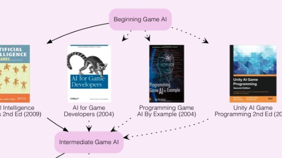
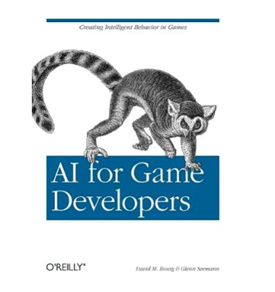
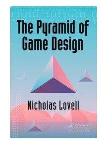
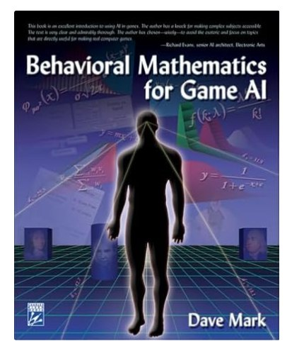
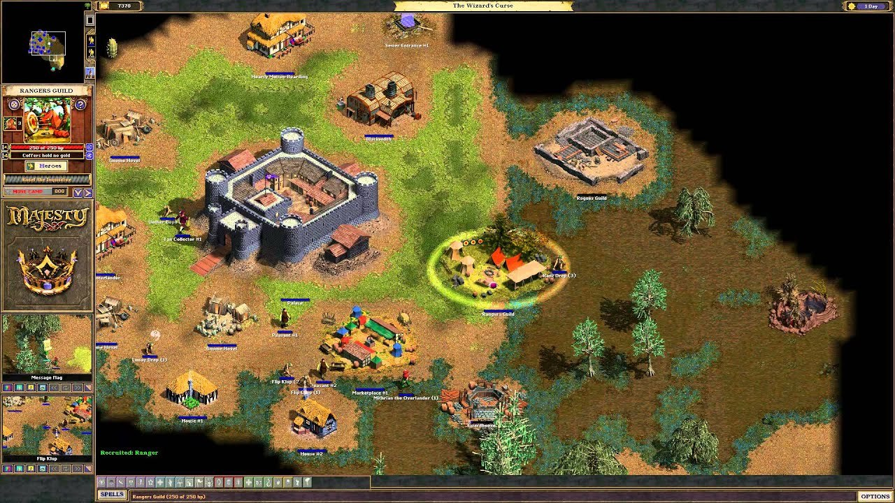
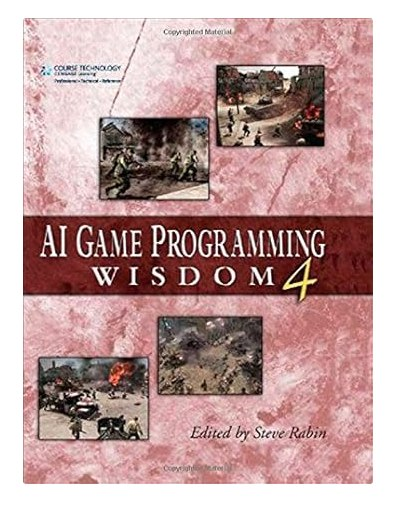

After the article about books for a gamedev programmer's self-development, people asked me to write more about the AI side and what's worth reading on the topic. For a game-AI programmer the situation with books is similar, but with a few interesting quirks. What matters here is not so much the depth of knowledge as your hands-on familiarity with the tools, libraries and technologies in general — and given that new approaches develop at a striking pace (striking for gamedev, of course). It feels like behavior trees (BT) only started being used some 10 years ago, yet they're already at revision 4.x (behaviortree.dev). But it's important not to fixate on dragging fashionable gadgets into the project: the fundamentals remain the most important thing you can get. It's like the parable of the fishing rod — give a man a fish and he eats for a day; give him a rod and he feeds himself for life. The rod here is knowing how a thing works, not how it can be used.
AI still stands apart in gamedev, because there are still no standards for building game logic: each studio solves its own unique technical and engineering problems and has to find a balance between something new and the overall stability of the game. This path is littered with trial and error, even if you've already walked it before, and few people can help you spot the mistakes in advance — simply because they walked a different path, with their own rakes and crutches. It's even worse when a famous developer joins the team and starts selling their solutions and experience, which often don't mesh with what the team has built. But this article isn't about that — it's about useful books.
Unfortunately, there aren't that many good books, and internal talks and presentations from GDC and game-adjacent conferences — not to mention a company's own developments and source code — are guarded and shared very rarely, read: almost never.
AI for Game Developers

This is probably the best book if you want to start learning the concepts of building AI for games. Think of it as "Game AI for Dummies in 21 Days" — there used to be a series of books about various programming languages with a similar name. Overall this book is the starting point for everyone, and you'll most likely be offered it to read at the studio — it'll be in the local library. As always, it's better to read it in the original, because our translators don't always render the phrasing correctly.
The authors explain a fairly wide range of techniques, solutions and strategies used in game development in simple, clear language — with one small caveat: simple if you've already managed to read other dev books, clear if you've already tried doing something yourself. The information is presented in accessible language for people with different levels of experience and a general background in game development. The book is well structured, with a balance of theory and practical examples. Bourg's approach helps you understand some AI concepts like BT, activities, interruptions, monitors, and so on. It does a decent job covering game-AI concepts such as decision-making, learning and perception (EOS, environment obstacle system) — I touched on a similar system in this article.
What else you'll learn from the book:
- Pathfinding and navigation: one of the book's key topics, essential for NPC movement and behavior; it explains popular algorithms such as A* and Dijkstra's, but A* with jumps isn't touched on at all, even though its use in games is more widespread now.
- Finite state machines (FSM): FSMs are discussed as a way to manage the various states of game characters. There are examples of how to create and manage FSMs to control character behavior and their interactions.
- Behavior trees (BT): a basic understanding of working with behavior trees as an alternative to finite state machines. The structure is explained, along with how they can be used to build more complex and flexible NPC behavior.
- Decision-making and utility systems: readable overall, but I didn't like it — too much filler. Utility-, activity- and goal-weight-based systems are described.
- Combat AI and strategies: it also covers AI strategies for combat scenarios, where NPCs can adapt to the player's behavior and make strategic (group) decisions during the game — like defending a place, holding a point, observation areas.
- Learning and adaptation: machine-learning concepts are touched on a little, but not in the sense you'd do it with an LLM — after all, the book came out almost 20 years ago. It's more about classical learning, with weights, pruning behavior branches by triggers, and basic principles like "chasing the player," "rubber-banding" or "hide-and-seek" that make gameplay more dynamic and responsive. Most of these models are easily spotted by players, since they've been used for a long time in a great many games, but you do need to know their strengths and weaknesses.
Game AI Pro
A book series devoted to artificial intelligence in computer games. Each book is a collection of articles and the experience of real developers who share their knowledge and practical approaches. Each book is organized into chapters devoted to topics developers often run into. It's better to read it in parallel with the first book on the list — the chapters that overlap in topic. That way there's more material to chew on and a chance to see more examples on the topic.
- Navigation and pathfinding — pathfinding algorithms, character movement and route planning.
- Character behavior — implementing NPC behavior using techniques like finite state machines and behavior trees.
- Environmental awareness — adapting AI to changes in the game world, as well as interaction with players and other NPCs.
- Performance optimization — techniques and tips for improving real-time AI performance.
- Machine learning — using advanced methods to create adaptive character behavior.
Game Engine Gems
This series offers stories about the making of already-released games — something like a printed podcast with valuable tips, techniques and best practices from experienced developers. The format consists of short stories and articles from the masters, which makes it an engaging retrospective overview of mistakes and recommendations about what you should (and, more importantly, shouldn't) do in game development. Don't let the title fool you — it's not only about game engines; over time the volumes came to cover practically every aspect of development. On one hand, this way of presenting the material makes it easy to read — I got through all the books in just a month of evenings; on the other hand, if you've already done something yourself or shipped a game, you'll see that the topics are covered superficially. To be fair, all the chapters are written to a good literary standard (again, these are tales from the masters about making a game and the greener grass). The first one is better read separately, since it's mostly about engines, while the second and third already speak more closely about AI or topics around it.
! Better to read in the original — our translators use the context clumsily and often cut out whole paragraphs!
To be clear: these books won't give you a full understanding of how to build a game engine or write good, interesting enemy AI, no. The book barely discusses the technical side; instead, the focus is on some narrow, specific topics that came up during development and on describing mistakes post-mortem. As a supplement to the more technical books you can find on game-engine architecture and game AI, the book is worthy and definitely deserves a place on this list.
Highlights:
- Mistake analysis — I think this is clear, but keep in mind the gap of almost ten years, the last one came out in 2016. Developers share what went wrong in their projects and explain how to avoid similar problems.
- Best practices and what you shouldn't have done — advice on what turned out effective in practice: from performance optimization to improving player interaction.
- Tools — successful and unsuccessful examples of using various engines, libraries and frameworks.
- Development culture — how to set up effective collaboration in a team and keep a project healthy under tight deadlines and pressure from investors.
The Pyramid of Game Design

The book describes a model for designing AI in computer games. This model is meant to help game developers connect the various aspects of game design. It's a theory of how to build the links in a game: between quests, between items, between NPCs, between the player and the environment. Over years of development I've never come across practical examples of applying it in full, the way it's described in the book. As a theory it looks quite good and coherent, but as a practical approach I've never seen it anywhere. Individual parts, yes, are used fairly widely — more on that below — but "emotional programming of players" even sounds sketchy, although recent games like Inscryption or Buckshot Roulette seem to have tried to apply certain chapters of this book in practice.
Topics that may interest AI programmers and designers:
- Pyramid structure: the pyramid is divided into different levels, each representing an important aspect of game design. This hierarchical model emphasizes that the fundamental elements must be solidly built before moving to the next level.
- Player-centric design: Lavell stresses the importance of understanding players' motivations and their experience. He urges designers to consider how each element of the game affects player satisfaction and engagement.
- Iterative design process: the book advocates an iterative approach to game design, where ideas are constantly tested and refined based on player feedback. This approach helps designers create more polished and engaging games.
- Practical applications: although the book presents theoretical concepts, Lavell gives practical advice on applying these ideas in real game development. He discusses common mistakes and difficulties designers may face and suggests ways to overcome them.
Behavioral Mathematics for Game AI

This is a valuable handbook for game developers and AI programmers, but very boring. I got through the book after three attempts. Still, if you want to understand the mathematical foundations of NPC behavior models in games and to appeal to them in arguments with a designer, this book will definitely be useful. It's written in a fairly confusing way — there may have been translation difficulties here too — and it happened that concepts from the previous chapter would be forgotten by the start of the next one. It's more like a reference for those who want to see how certain game concepts are perceived by designers in theory. Keep in mind the author conveys knowledge from the late 90s or early 2000s, and some approaches are seriously outdated and hardly used now. Don't read it cover to cover — it's a reference: if a chapter doesn't grab you after five pages, move to the next. Because the chapters are poorly organized, IMO, you should read them not in the order they're laid out but in the order of the questions that arise in your head. Well, it is what it is, can't be fixed now. The book hooked me with its author, who took part in creating the AI for the first Majesty — if anyone remembers that game, I think many will recognize the solutions of those years in these descriptions.

- Math in AI design: math matters in AI design — you need to understand things like probability theory, basic statistics and linear algebra. And the book explains how these mathematical tools can be used to create more complex and believable AI behavior.
- Behavior models: decision-making algorithms are examined in detail — how mathematical models can be used to model rational behavior, risk assessment, expected utility, weighted behavior models.
- Pathfinding and navigation: various algorithms for navigation and pathfinding are laid out, including A* and Dijkstra, with an explanation of the mathematical principles underlying these algorithms.
- Dynamic and reactive behavior: the problems of creating game AI that can dynamically react to changes in the map, items or the player's actions are shown.
- Game theory: strategies for NPCs in multiplayer and loosely-controlled environments are discussed (hi, Majesty), where understanding opponents' behavior is crucial and is based on criteria and assessments, not rigid scripts.
AI Game Programming Wisdom

A book series devoted to techniques in artificial intelligence applied to game development. These are stories about solutions that existed in early-2000s games. The series emphasizes practical approaches and solving real AI problems.
Why I can recommend this series:
- Target audience: the books are aimed at those who already have basic knowledge of programming and game development. However, it's important to remember that much of the advice is based on early-2000s experience, and not all of it may be relevant today.
- Practical focus: the series includes practical examples and solutions, which makes it a good starting point for newcomers to the industry, offering a retrospective look at the decisions made in various games by different authors.
- Easy to read: many of my colleagues, myself included, went through the whole series in one go, often treating it as a work of fiction. However, as already said, most of the proposed solutions can be debatable in their application today.
Why I can't recommend this series:
- It's a book on the history of game-AI development, a historical reference; you shouldn't adopt and transplant the solutions of those years onto modern games, especially since bad and good solutions are mixed together and the author often doesn't say what they led to.
- Unfortunately, the series effectively ended with the second book: the third was almost 700 pages, but with real and interesting examples for maybe 200, the rest being filler and musings, which doesn't fit the style of the first two at all. Personally it seemed to me that the last book was written by a different team of authors, since the presentation differed greatly from the previous volumes — so it's better to read the first two and the third if you feel like it.
Conclusion
Thanks for reading. Throw interesting books and your opinions about them in the comments — I'll add them too.
← All articles